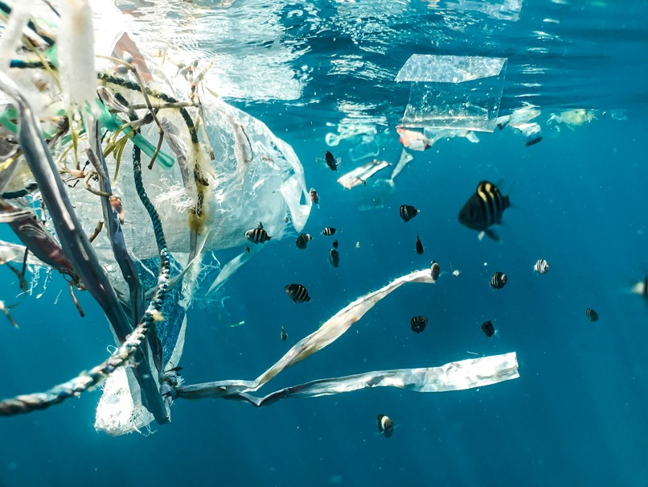
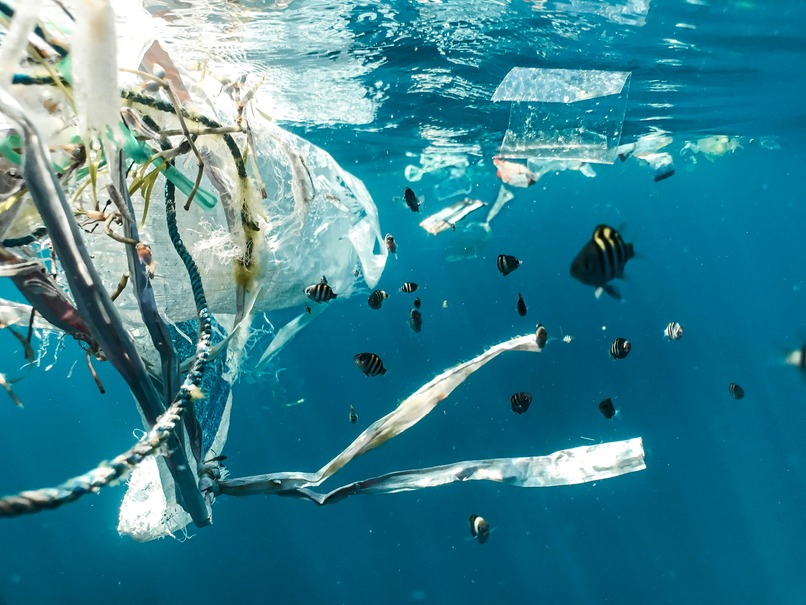

Overview
Purpose
TideTurners exists to restore the health of oceans, lakes, and waterways by removing plastic pollution, preventing future waste, and inspiring global action. Through cutting-edge cleanup technologies, community engagement, and advocacy for sustainable policies, TideTurners is turning the tide on plastic pollution — creating cleaner, healthier waters for future generations and protecting both marine ecosystems and human health.
Audience
Eco-conscious individuals, businesses, and organizations who care about clean water, healthy oceans, sustainability, and protecting the planet for future generations. They want actionable ways to reduce plastic pollution and support environmental change.
Branding
Website Logo

Style Guide
Color Palette
| Primary | Secondary | Accent 1 | Accent 2 |
|---|---|---|---|
Typography
Heading Font: Raleway
Paragraph Font: Helvetica
Normal paragraph example
A study found microplastics on 73% of beaches along Lake Michigan, showing that even our freshwater lakes aren’t immune to the plastic crisis.The consequences extend far beyond the water. One shocking estimate indicates that the average person consumes about a credit card’s worth of plastic every week — tiny particles found in our food, water, and air. This is no longer just an environmental issue — it’s a human health emergency. At TideTurners, we believe every ripple of action can build into a powerful wave of change.
Colored paragraph example
Plastic pollution doesn’t just appear in the ocean — it starts on land. That’s why TideTurners’ cleanup efforts don’t stop at the beach. We focus on intercepting plastic before it reaches the sea, using advanced technology, community partnerships, and innovative cleanup systems to collect and remove plastic from rivers, canals, and coastal areas.
Navigation
Site Map
Content
Home page
Turning the Tide: How TideTurners is Restoring Our Oceans — and Our Future Our oceans are in trouble. Every year, more than 11 million tons of plastic waste pour into the sea — a relentless flood of pollution that threatens marine life, damages fragile ecosystems, and even makes its way into the seafood we eat. But plastic pollution doesn’t stop at the coasts. A study found microplastics on 73% of beaches along Lake Michigan, showing that even our freshwater lakes aren’t immune to the plastic crisis. The consequences extend far beyond the water. One shocking estimate indicates that the average person consumes about a credit card’s worth of plastic every week — tiny particles found in our food, water, and air. This is no longer just an environmental issue — it’s a human health emergency. At TideTurners, we believe every ripple of action can build into a powerful wave of change. Our mission is to clean our oceans, intercept plastic waste at the source, and inspire a global movement to protect the waters that sustain life on Earth. Cleanup with Purpose Plastic pollution doesn’t just appear in the ocean — it starts on land. That’s why TideTurners’ cleanup efforts don’t stop at the beach. We focus on intercepting plastic before it reaches the sea, using advanced technology, community partnerships, and innovative cleanup systems to collect and remove plastic from rivers, canals, and coastal areas. Our cleanup teams work where pollution flows the fastest, deploying tools like floating barriers, plastic traps, and even drones to locate and capture waste. Every piece of plastic we collect is sorted, analyzed, and responsibly processed, helping us understand where it comes from and how to stop it at its source. Prevention at the Source While cleanups are critical, they only address part of the problem. To truly turn the tide on ocean pollution, we need to stop plastic waste before it starts. That’s why TideTurners works closely with businesses, policymakers, and communities to develop smarter packaging, promote reusable alternatives, and advocate for policies that reduce single-use plastics. Education is also at the heart of prevention. From classrooms to boardrooms, we empower people with knowledge about how their everyday choices impact the ocean — and their own health. By making sustainability accessible, practical, and inspiring, we’re helping individuals and businesses make better choices that protect our waterways, oceans, and even our own bodies. Powered by Science and Community Our work is guided by science and fueled by people. We collaborate with marine scientists, engineers, and environmental experts to ensure our methods are effective and backed by data. From tracking plastic flows through watersheds to identifying pollution hotspots, we combine cutting-edge research with on-the-ground action. But science alone isn’t enough — real change happens when people come together. That’s why we actively engage local communities in every project we launch. Whether through organized cleanups, educational workshops, or partnerships with grassroots organizations, we ensure our efforts create jobs, support local economies, and foster environmental stewardship. From Problem to Possibility It’s easy to feel overwhelmed by the scale of plastic pollution — but every piece removed, every policy improved, and every person inspired is a step toward cleaner waters. TideTurners isn’t just cleaning up; we’re building a global movement for ocean and freshwater health, turning one-time cleanups into long-term solutions. The plastic crisis touches all of us — from remote beaches to urban lakeshores, from the seafood on our plates to the water in our taps. Whether you’re a concerned citizen, a business leader looking to make a difference, or a policymaker ready to take action, there’s a place for you in this movement. Together, we can turn off the plastic tap, restore our oceans, and protect the incredible life — and future — that depends on healthy water. One tide at a time, we’re creating a cleaner, safer world for all. Join us. Let’s turn the tide on plastic pollution — together.
Images for the Home page
 

Mission
At TideTurners, we believe every piece of plastic removed from our oceans, lakes, and waterways is a step toward a cleaner, healthier planet. Our mission is simple but urgent: to restore the health of our waterways by removing plastic pollution, preventing future waste, and inspiring a global movement to protect the waters that sustain all life. Every year, millions of tons of plastic waste enter the world’s oceans, choking wildlife, damaging delicate ecosystems, and even finding its way into the seafood we eat and the water we drink. In fact, a study found microplastics on 73% of beaches along Lake Michigan, proving that plastic pollution isn’t just an ocean problem — it’s everywhere. Another shocking estimate shows the average person consumes the equivalent of a credit card’s worth of plastic every single week. This crisis touches every corner of the planet, from the most remote beaches to the water flowing through our own communities. Cleanup with Purpose At TideTurners, we go beyond traditional cleanups. We use innovative technology, data-driven strategies, and community-powered action to collect plastic at every stage of its journey — from city streets and storm drains to rivers, lakes, and coastal areas. By intercepting plastic before it can reach the open ocean, we target pollution at its source. Every piece we collect is sorted, analyzed, and responsibly processed, helping us better understand where plastic comes from and how to prevent it from entering the environment in the first place. Our cleanup efforts are scalable, science-backed, and community-driven. We believe that by combining local action with global awareness, we can create lasting change. Prevention Starts on Land While cleanup is critical, prevention is the key to turning off the plastic tap. That’s why TideTurners works with businesses, policymakers, and everyday people to develop smarter systems and encourage sustainable alternatives. Whether we’re partnering with companies to rethink packaging, advocating for stronger environmental policies, or educating communities on plastic-free living, everything we do is designed to stop plastic waste before it ever reaches the water. Education is at the heart of prevention. From classrooms to corporate offices, we teach people how everyday choices — from the products they buy to the way they dispose of waste — have a direct impact on our waterways. By empowering individuals with knowledge, we turn awareness into action. Powered by Science, Fueled by Community TideTurners’ mission is built on the understanding that real solutions require collaboration. We work hand-in-hand with marine scientists, environmental engineers, policy experts, businesses, and grassroots organizations to ensure every effort we make is informed, effective, and sustainable. We also believe that everyone has a role to play, no matter where they live. Whether you’re joining a cleanup, volunteering with our teams, or simply choosing to reduce your plastic footprint, you’re part of the solution. A Future Worth Fighting For The plastic pollution crisis is massive, but we believe that collective action creates unstoppable change. Every bottle removed, every policy passed, every person inspired brings us closer to a world where plastic pollution is no longer a threat to our waters, our wildlife, and our health. At TideTurners, we’re not just cleaning up — we’re building a future where our oceans, lakes, and rivers can thrive again. By turning off the plastic tap and mobilizing people around the world, we’re proving that together, we really can turn the tide. Join us. Act now. Protect our future.
Images for the Page 2

Donate
Every dollar helps turn the tide. At TideTurners, we believe that every piece of plastic removed from our oceans, lakes, and waterways is a victory — a step toward cleaner water, healthier ecosystems, and a more sustainable future. But removing plastic is only part of the solution. To truly protect our waters, we need to prevent plastic waste at its source and inspire global action to protect the waters that sustain all life. This work is only possible with the support of people like you. Your donation directly funds plastic cleanup operations, education programs, and prevention initiatives that tackle the crisis from every angle. The Plastic Pollution Crisis Every year, millions of tons of plastic flood into our oceans, threatening marine life, contaminating seafood, and even entering our drinking water. Microplastics — tiny, toxic fragments — have been found on 73% of beaches along Lake Michigan, proving that this is not just an ocean problem. It’s in our rivers, lakes, and even the air we breathe. Shockingly, the average person consumes the equivalent of a credit card’s worth of plastic every week. From remote coastlines to our own backyards, plastic pollution is a global emergency that affects us all. But together, we can turn the tide. Your Donation Makes an Impact When you give to TideTurners, your support powers: ✅ Coastal and Inland Cleanups – Removing plastic from beaches, rivers, and lakes before it can enter the ocean. ✅ Innovative Cleanup Technology – Deploying tools and systems to capture plastic at its source, from storm drains to major waterways. ✅ Community Engagement & Education – Teaching people how to reduce plastic use and prevent pollution at home, at work, and in their communities. ✅ Policy Advocacy – Working with businesses and governments to advance smarter policies that reduce plastic waste and protect public health. Every dollar you donate helps us remove more plastic, protect more wildlife, and inspire more people to take action. Why Your Support Matters TideTurners isn’t just about cleaning up — we’re building a global movement to change the way the world thinks about plastic. From the products we buy to the policies we pass, every decision we make shapes the health of our waterways. But lasting change takes all of us. Your donation empowers our cleanup crews, funds our outreach programs, and helps us create a future where plastic pollution is no longer a threat to the environment or human health. When you donate to TideTurners, you’re not just giving money — you’re becoming part of the solution. You’re helping us protect endangered marine life, safeguard drinking water, and create a cleaner, healthier future for all. How You Can Help 🌊 One-Time Donation – Every contribution, no matter the size, helps us take another step toward cleaner water. 🌊 Monthly Giving – Become a TideTurner Champion and support ongoing cleanups and education year-round. 🌊 Corporate Sponsorship – Partner with us to amplify your company’s impact and inspire employees and customers alike. 🌊 Honorary Gifts – Give in honor of someone you love and help leave a legacy of clean water and healthy oceans. Join the Movement The plastic pollution crisis is urgent — but together, we can turn the tide. Your donation makes cleanups possible, fuels prevention programs, and helps build a future where plastic pollution is no longer part of our story. Donate today to protect our waters, our wildlife, and our future. 🌎 Every dollar counts. Every piece of plastic matters. Every action makes a difference. Turn the tide — donate now.
Images for the Page 3


Wireframes
Create three wireframes for your site. One for each page and list them here
Home
[Any additional details about home that the wireframe does not make clear]
Merch Page
Merch Page: showcasing merch to buy
Mission Page
Updates
[Any additional details about page 3 that the wireframe does not make clear]